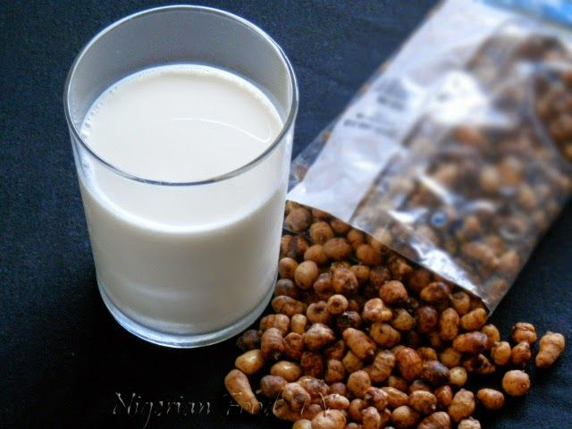

Our Traditional Juices
Zobo
Made from hibiscus leaves, rich in Vitamin C.

Fura da Nono
Millet balls with fermented milk, nourishing and filling.

Kunun Aya
Tigernut milk, naturally sweet and energy boosting.
Tamarind Juice
Sour-sweet delight, good for digestion.
Mixed Fruit Juice
A blend of local fruits for maximum refreshment.